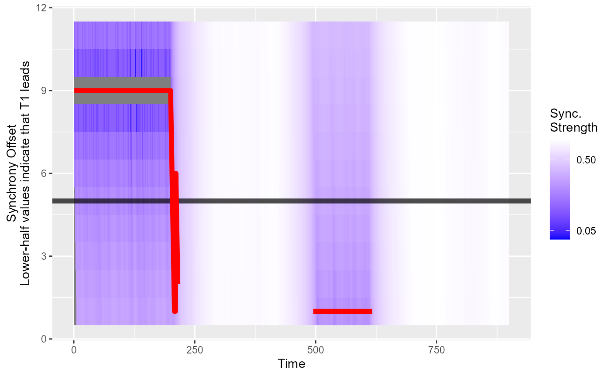

Plotting
Andreas M. Brandmaier
2023-02-27
plotting.Rmd
library(pdcsync)
N <- 1000
t1 <- arima.sim(model = list(ar = 0.2), n = N)
t2 <- arima.sim(model = list(ar = 0.2), n = N)
t2[500:700] <- t1[500:700+10]
t1[1:300] <- t2[1:300+3]
result <- pdcsync(t1, t2, segment_width = 100, search_width = 5)Plot the simple synchronisation profile
plot(result)## Warning: Transformation introduced infinite values in discrete y-axis
Suppress the best-fitting synchronisation line:
plot(result, show_sync_line = FALSE)## Warning: Transformation introduced infinite values in discrete y-axisShow the line again and vary output:
plot(result, show_sync_line = TRUE, sync_lwd=1, sync_col="green")## Warning: Transformation introduced infinite values in discrete y-axisPlot the extended synchronisation profile including the time series.
syncplot(result)## Don't know how to automatically pick scale for object of type <ts>. Defaulting
## to continuous.## Warning: Transformation introduced infinite values in discrete y-axis## Don't know how to automatically pick scale for object of type <ts>. Defaulting
## to continuous.
Annotate segments that are “leading” segments
syncplot(result, annotate_segments = TRUE)## Don't know how to automatically pick scale for object of type <ts>. Defaulting
## to continuous.## Warning: Transformation introduced infinite values in discrete y-axis## Don't know how to automatically pick scale for object of type <ts>. Defaulting
## to continuous.